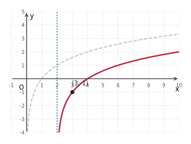
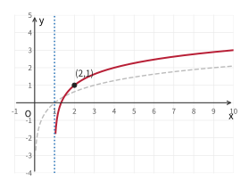
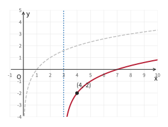

別冊練習問題 7 の解答 対数関数のグラフの平行移動・漸近線・定義域
(1) \(y=\log_2 x\) のグラフを \(x\) 軸方向に \(2\)、\(y\) 軸方向に \(-1\) だけ平行移動したグラフの方程式、漸近線、定義域を求めよ。
平行移動
\(y=\log_2 x\) を \(x\) 方向に \(2\)、\(y\) 方向に \(-1\)。
\(x\to x-2,\ y\to y+1\) と置き換える。
\[y+1=\log_{2}(x-2)\]\[y=\log_{2}(x-2)-1\]漸近線
漸近線は \(x=2\)。定義域は \(x>2\)。

通る点
\((1,0)\) は \(x\) 方向に \(2\)、\(y\) 方向に \(-1\) 動く。
\[(1+2,\ 0-1)=(3,\ -1)\]【答案】
\[y=\log_{2}(x-2)-1,\ \ x=2,\ \ x>2\]答
(2) \(y=\log_3 x\) のグラフを \(x\) 軸方向に \(1\)、\(y\) 軸方向に \(1\) だけ平行移動したグラフの方程式、漸近線、定義域を求めよ。
平行移動
\(y=\log_3 x\) を \(x\) 方向に \(1\)、\(y\) 方向に \(1\)。
\(x\to x-1,\ y\to y-1\) と置き換える。
\[y-1=\log_{3}(x-1)\]\[y=\log_{3}(x-1)+1\]漸近線
漸近線は \(x=1\)。定義域は \(x>1\)。

通る点
\((1,0)\) は \(x\) 方向に \(1\)、\(y\) 方向に \(1\) 動く。
\[(1+1,\ 0+1)=(2,\ 1)\]【答案】
\[y=\log_{3}(x-1)+1,\ \ x=1,\ \ x>1\]答
(3) \(y=\log_2 x\) のグラフを \(x\) 軸方向に \(3\)、\(y\) 軸方向に \(-2\) だけ平行移動したグラフの方程式、漸近線、定義域を求めよ。
平行移動
\(y=\log_2 x\) を \(x\) 方向に \(3\)、\(y\) 方向に \(-2\)。
\(x\to x-3,\ y\to y+2\) と置き換える。
\[y+2=\log_{2}(x-3)\]\[y=\log_{2}(x-3)-2\]漸近線
漸近線は \(x=3\)。定義域は \(x>3\)。

通る点
\((1,0)\) は \(x\) 方向に \(3\)、\(y\) 方向に \(-2\) 動く。
\[(1+3,\ 0-2)=(4,\ -2)\]【答案】
\[y=\log_{2}(x-3)-2,\ \ x=3,\ \ x>3\]答